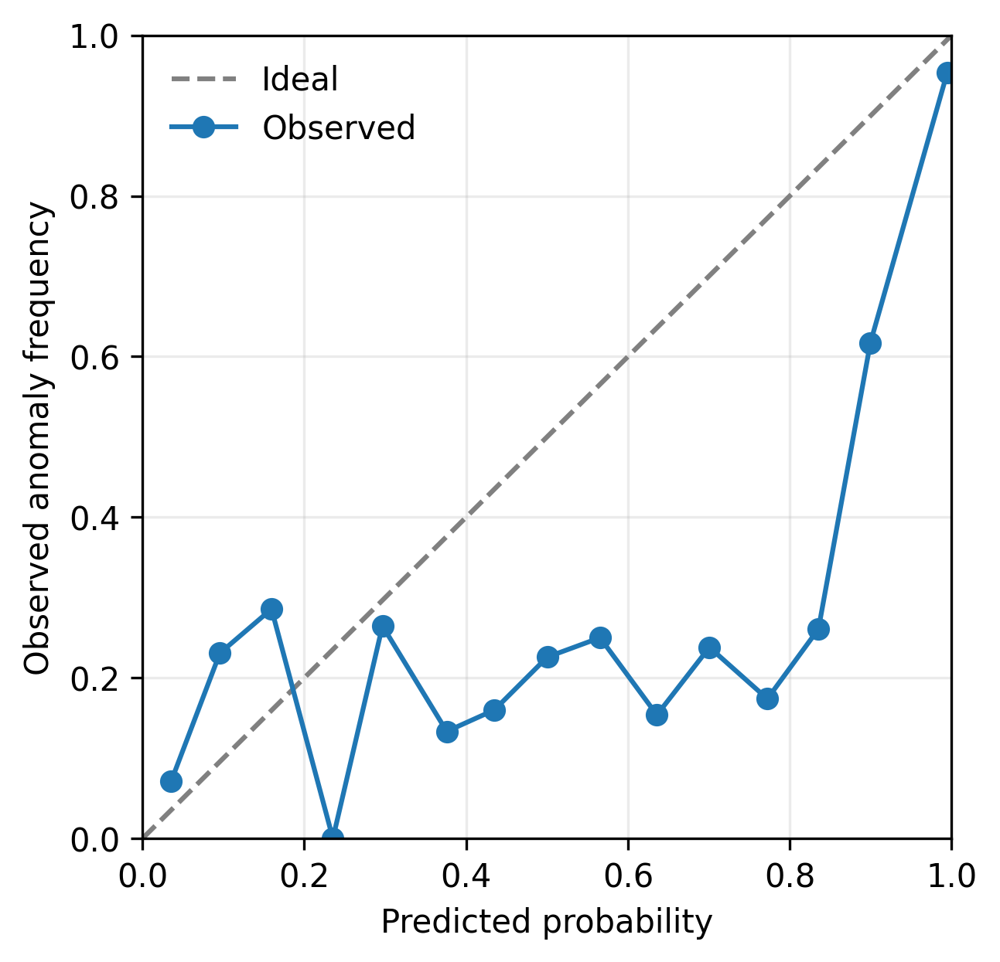
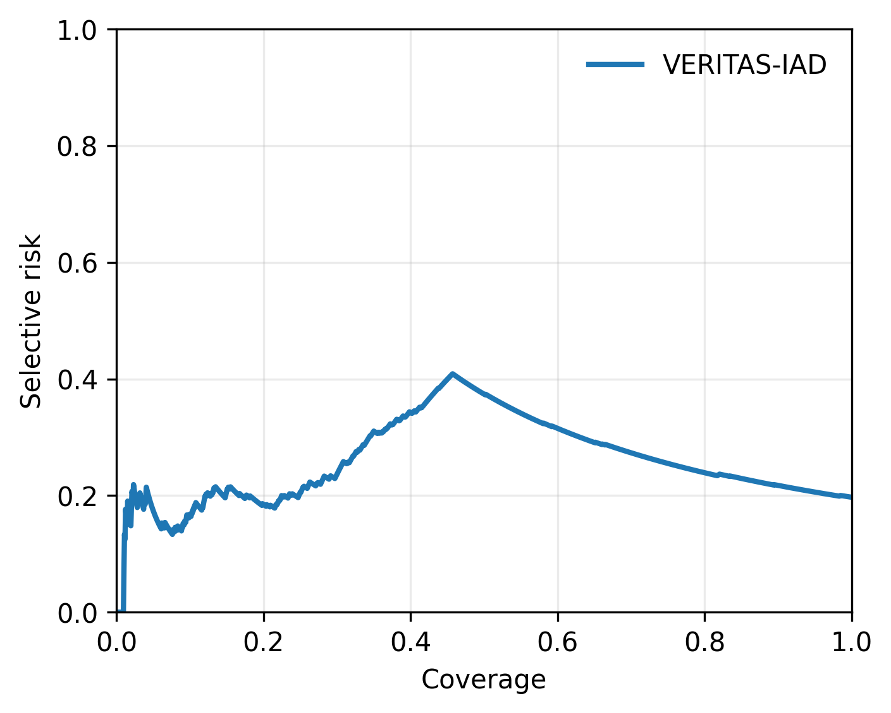
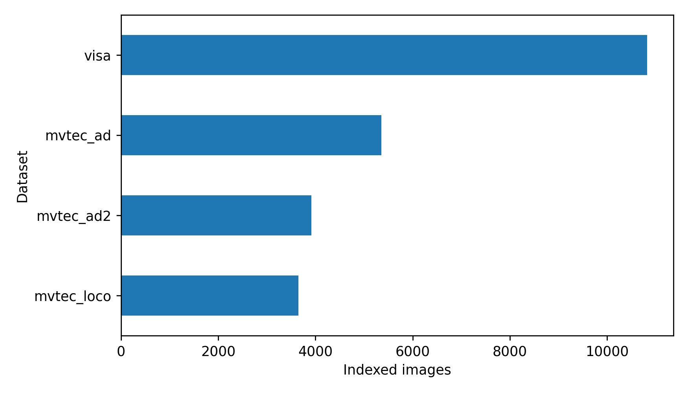

Interactive reviewer simulationRuns frozen, evidence-backed scenarios in the browser. Uploaded images are previewed locally; no live model inference or production decision is performed.
Operational overview
Verification-guided inspection
One console for anomaly perception, evidence verification, calibrated risk, and selective action.
Live decision pipelineAll modules available
LIVE01PerceptionPatchCore
→02RouterSelective
→03ReasoningVision-language
→04VerifierIndependent
→05RiskCalibrated
Benchmark profileFrozen final-test metrics
Recent inspectionsSession activity
Method capabilitiesVerification beyond prediction
◇Independent verificationChecks evidence outside VLM self-assessment
△Shift-aware riskTracks feature-distribution deviation
⌁Selective computationRoutes expensive reasoning when valuable
≋Auditable tracePreserves evidence for every decision
New inspection
Simulate an industrial inspection
Select a frozen scenario, optionally preview a local image, and observe the evidence-verification pipeline.
Inspection inputChoose a frozen reviewer scenario
Preview a local inspection imagePNG or JPEG · never uploaded · simulation output follows the selected frozen scenario
Agent executionWaiting for input
0.0 sSelect a scenario and run the analysis to observe the verification workflow.
Decision review
Evidence-backed inspection result
Review the visual evidence, independent verification, calibrated risk, and final action.
Visual evidenceCable · structural defect
Normal structureHigh anomaly responseLocalized region: 0.8719 agreement
Final actionHUMAN REVIEW
0.72calibrated risk
Anomaly probability0.93
Verifier agreement0.64
Shift score0.68
Reasoning routeInvoked
Verified rationale
Localized structural deviation is supported by perception evidence. Elevated distribution shift and verifier disagreement require expert review.
Evidence traceIndependent contributions to calibrated risk
Structured reasoningSelective vision-language analysis
VALID SCHEMAObserved condition
Surface discontinuity near the central bend.
Expected normal state
Continuous insulation with uniform texture and geometry.
Independent check
Localization agrees with high-response region; exemplar consistency is reduced.
Research evidence
Benchmark and reliability explorer
Interact with frozen final-test metrics, calibration curves, and selective-risk profiles.
Calibration profilePredicted probability vs observed frequency

Selective riskRisk–coverage operating curve

Dataset composition23,740 indexed images

System operations
Agent and compute monitoring
Observe routing, latency, throughput, and system health for the deployed decision workflow.
Agent healthCurrent service state
OPERATIONALStage latencyMeasured execution profile
Adaptive routingValidation threshold 0.30
21.3%VLM routed
1,524 selective analyses
5,622 detector-only paths
101 evaluated thresholds
Inspection queueInteractive session
Blinded evaluation
Assess explanation quality
Rate evidence grounding and usefulness without exposing method identity or system decision.
Evaluation item 01 / 03Method A
Explanation shown to evaluator
The observed region differs from the expected normal structure; inspect independent localization evidence before accepting the claim.